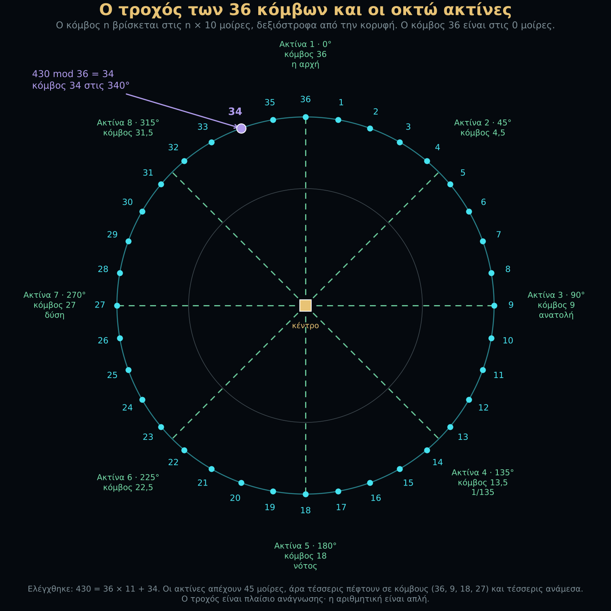
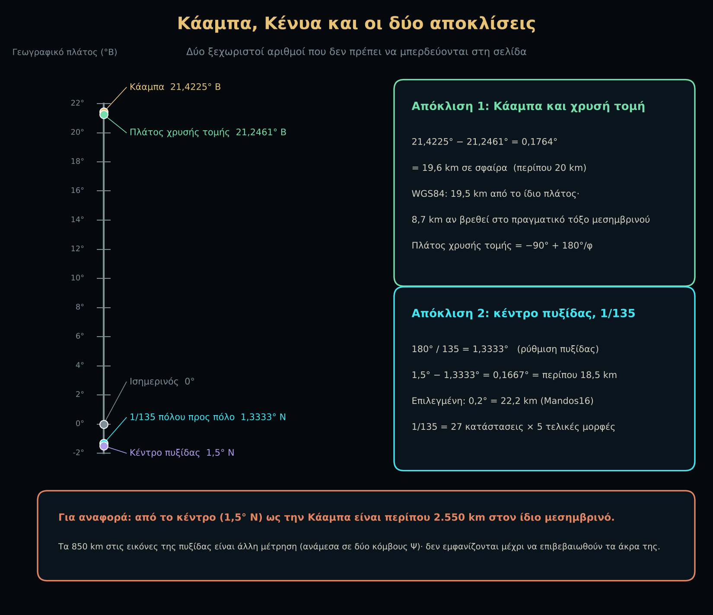
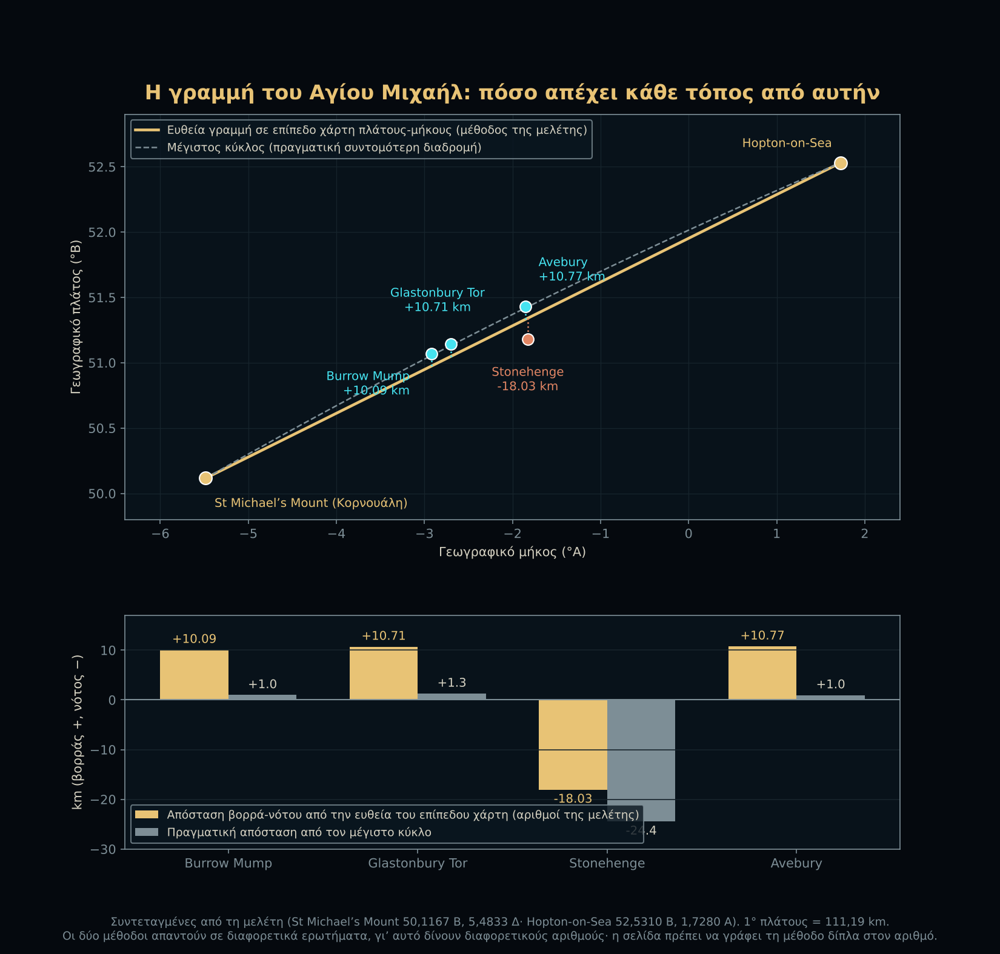
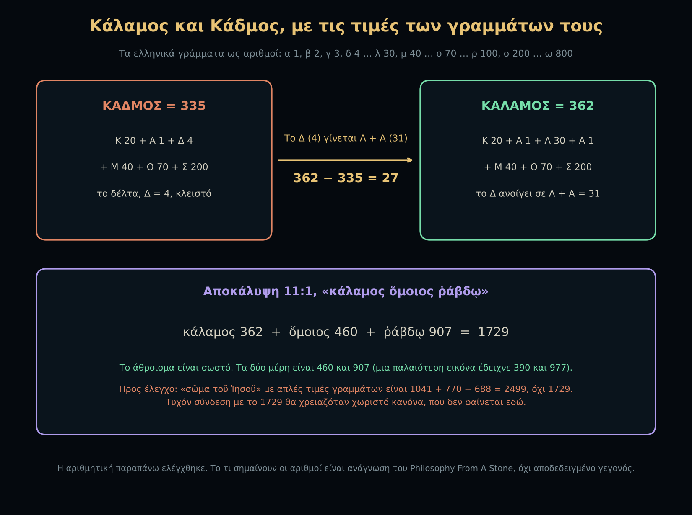

Η Μηχανή των Ophanim
Μια πυξίδα από γράμματα
Κάθε γράμμα είναι αριθμός. Κάθε αριθμός είναι μια κατεύθυνση πάνω σε έναν κύκλο. Πρόσθεσε μια λέξη και δείχνει κάπου.
Η σελίδα εξηγεί την ιδέα από την αρχή, με απλά λόγια, και από κάτω βρίσκεται η λεπτομέρεια για όποιον τη θέλει. Πρόσεξε τις μικρές ετικέτες: ελέγχθηκε σημαίνει ότι τρέξαμε την αριθμητική και ισχύει, πλαίσιο σημαίνει ότι είναι ο δικός μας τρόπος ανάγνωσης των αριθμών, και δεν ίσχυσε σημαίνει ότι διαπιστώσαμε πως δεν βγαίνει όπως ήταν γραμμένο.
Ένας κύκλος 36 σημείων
Πάρε έναν κύκλο και σημάδεψε 36 σημεία γύρω του, ανά 10 μοίρες. Ο κόμβος 36 είναι στην κορυφή (0 μοίρες) και οι αριθμοί ανεβαίνουν δεξιόστροφα· ο κόμβος 9 είναι στις 90 μοίρες (ανατολή), ο 18 στις 180 (νότος) και ο 27 στις 270 (δύση).
Για να τοποθετήσεις μια λέξη, πρόσθεσε τα γράμματά της, διαίρεσε με το 36 και κράτησε το υπόλοιπο. Αυτό το υπόλοιπο είναι ο κόμβος. Οι οκτώ πράσινες διακεκομμένες γραμμές είναι οι οκτώ ακτίνες της μηχανής, ανά 45 μοίρες. Τέσσερις πέφτουν σε κόμβους (36, 9, 18, 27) και τέσσερις ανάμεσα σε κόμβους.

Παράδειγμα: η λέξη DECISION (ΝΤΕΣΙΖΙΟΝ)
Τα γράμματα διαβάζονται ως ήχοι, με το ελληνικό γράμμα για κάθε ήχο. Το C είναι κάππα (20) όταν ηχεί Κ και σίγμα (200) όταν ηχεί Σ. Στο DECISION ηχεί Σ· το D ηχεί «ντ» (Ν + Τ) και το S του «-sion» ηχεί «ζ». Η λέξη ηχεί ΝΤΕΣΙΖΙΟΝ και δίνει άθροισμα 702. Το 702 διαιρεμένο με το 36 αφήνει υπόλοιπο 18, δηλαδή 180 μοίρες: ακριβώς νότια.
| Γράμμα | Ελληνικό | Τιμή | Mod 36 | Διεύθυνση |
|---|---|---|---|---|
| D | Ν νι | 50 | 14 | 140° |
| D | Τ ταυ | 300 | 12 | 120° |
| E | Ε έψιλον | 5 | 5 | 50° |
| C | Σ σίγμα | 200 | 20 | 200° |
| I | Ι γιώτα | 10 | 10 | 100° |
| S | Ζ ζήτα | 7 | 7 | 70° |
| I | Ι γιώτα | 10 | 10 | 100° |
| O | Ο όμικρον | 70 | 34 | 340° |
| N | Ν νι | 50 | 14 | 140° |
ελέγχθηκε Άθροισμα = 702 (50+300+5+200+10+7+10+70+50). 702 = 36 × 19 + 18, άρα κόμβος 18. Η σημασμένη γραμμή, Ο = 70, έχει 70 mod 36 = 34, άρα πέφτει στον κόμβο 34. Οι λευκές μελέτες δίνουν και μια στήλη «εσωτερικό» για κάθε γράμμα· δύο εκδοχές διαφωνούν, γι’ αυτό παραλείπεται εδώ μέχρι να λυθεί.
Ο πλήρης πίνακας των 36 κόμβων (ελληνικά, εβραϊκά, αρμενικά, Futhark)
Κόμβοι 1 ως 36 με τη σειρά κάθε αλφαβήτου. Τα ελληνικά και τα εβραϊκά φτάνουν τα 27 σημεία (στα εβραϊκά με τα πέντε τελικά γράμματα) και συνεχίζουν στις χιλιάδες. Τα αρμενικά έχουν ακριβώς 36 γράμματα. Οι 24 ρούνοι του Elder Futhark επαναλαμβάνονται για να γεμίσει ο δακτύλιος. πλαίσιο Ο πίνακας ευθυγραμμίζει τα αλφάβητα κατά θέση. Αυτό είναι διαφορετική ιδέα από το «τιμή mod 36» παραπάνω, άρα ο κόμβος 34 στον πίνακα (το 34ο σημείο) και ο κόμβος 34 για το 430 (το υπόλοιπο) είναι δύο ξεχωριστά πράγματα που τυχαίνει να συναντιούνται.
| Κόμβος | Γωνία | Ελληνικά | Εβραϊκά | Αρμενικά | Ρούνος |
|---|---|---|---|---|---|
| 1 | 10° | Άλφα (1) | Άλεφ (1) | Ayp (1) | Fehu |
| 2 | 20° | Βήτα (2) | Μπετ (2) | Ben (2) | Uruz |
| 3 | 30° | Γάμμα (3) | Γκιμέλ (3) | Gim (3) | Thurisaz |
| 4 | 40° | Δέλτα (4) | Νταλέτ (4) | Da (4) | Ansuz |
| 5 | 50° | Έψιλον (5) | Χε (5) | Ech (5) | Raidho |
| 6 | 60° | Στίγμα (6) | Βαβ (6) | Za (6) | Kenaz |
| 7 | 70° | Ζήτα (7) | Ζάγιν (7) | Eh (7) | Gebo |
| 8 | 80° | Ήτα (8) | Χετ (8) | Et (8) | Wunjo |
| 9 | 90° | Θήτα (9) | Τετ (9) | To (9) | Hagalaz |
| 10 | 100° | Ιώτα (10) | Γιοντ (10) | Zhe (10) | Nauthiz |
| 11 | 110° | Κάππα (20) | Καφ (20) | Ini (20) | Isa |
| 12 | 120° | Λάμδα (30) | Λάμεντ (30) | Liwn (30) | Jera |
| 13 | 130° | Μι (40) | Μεμ (40) | Xid (40) | Eihwaz |
| 14 | 140° | Νι (50) | Νουν (50) | C’a (50) | Perthro |
| 15 | 150° | Ξι (60) | Σάμεχ (60) | Ken (60) | Algiz |
| 16 | 160° | Όμικρον (70) | Άγιν (70) | Ho (70) | Sowilo |
| 17 | 170° | Πι (80) | Πε (80) | Ja (80) | Tiwaz |
| 18 | 180° | Κόππα (90) | Τσάντι (90) | Ghad (90) | Berkano |
| 19 | 190° | Ρω (100) | Κουφ (100) | Che (100) | Ehwaz |
| 20 | 200° | Σίγμα (200) | Ρες (200) | Men (200) | Mannaz |
| 21 | 210° | Ταυ (300) | Σιν (300) | Yi (300) | Laguz |
| 22 | 220° | Ύψιλον (400) | Ταβ (400) | Now (400) | Ingwaz |
| 23 | 230° | Φι (500) | Καφ τελικό (500) | Sha (500) | Dagaz |
| 24 | 240° | Χι (600) | Μεμ τελικό (600) | Vo (600) | Othala |
| 25 | 250° | Ψι (700) | Νουν τελικό (700) | Ch’a (700) | Fehu 2 |
| 26 | 260° | Ωμέγα (800) | Πε τελικό (800) | Pe (800) | Uruz 2 |
| 27 | 270° | Σάμπι (900) | Τσάντι τελικό (900) | Jheh (900) | Thurisaz 2 |
| 28 | 280° | Άλφα′ (1000) | Άλεφ′ (1000) | Ra (1000) | Ansuz 2 |
| 29 | 290° | Βήτα′ (2000) | Μπετ′ (2000) | Se (2000) | Raidho 2 |
| 30 | 300° | Γάμμα′ (3000) | Γκιμέλ′ (3000) | Vew (3000) | Kenaz 2 |
| 31 | 310° | Δέλτα′ (4000) | Νταλέτ′ (4000) | Tiew (4000) | Gebo 2 |
| 32 | 320° | Έψιλον′ (5000) | Χε′ (5000) | Re (5000) | Wunjo 2 |
| 33 | 330° | Στίγμα′ (6000) | Βαβ′ (6000) | C’o (6000) | Hagalaz 2 |
| 34 | 340° | Ζήτα′ (7000) | Ζάγιν′ (7000) | Yiwn (7000) | Naudiz 2 |
| 35 | 350° | Ήτα′ (8000) | Χετ′ (8000) | P’wr (8000) | Isa 2 |
| 36 | 360° | Σάμπι′ (9000) | Τετ′ (9000) | K’ew (9000) | Jera 2 |
26 σημεία, και άλλα 8
Φαντάσου ένα μπλοκ 3 × 3 × 3 με 27 σημεία, σαν κύβο του Ρούμπικ. Αφαίρεσε το ένα στο κέντρο και μένουν 26: η εξωτερική επιφάνεια του κύβου. Η μηχανή το λέει κλουβί. Το 26 είναι και ο ατομικός αριθμός του σιδήρου.
Τα 8 σημεία των γωνιών τεντώνονται προς τα έξω πάνω στις διαγωνίους τους. 26 σημεία του κλουβιού συν 8 ακτίνες γωνιών κάνουν 34, τον αριθμό του κόμβου όπου πέφτει το 430.
ελέγχθηκε Η απόσταση από το κέντρο του μπλοκ ως μια γωνία είναι √3 = 1,732, και 1,732 − 1 = 0,732, το «εύρος επιμονής» της λευκής μελέτης.
πλαίσιο Ο ισχυρισμός ότι οι οκτώ γωνίες είναι οκτώ επίμονοι βρόχοι (αριθμός Betti-1 ίσος με 8, από την τοπολογική ανάλυση δεδομένων) είναι δήλωση της ίδιας της μελέτης. Δεν τον υπολογίσαμε εδώ. Οι εικόνες διασποράς που μας έδειξαν ήταν προσομοιωμένες, γι’ αυτό καμία δεν εμφανίζεται σε αυτή τη σελίδα.
Νόμος, αριθμός, μαθηματικά
Τρεις ελληνικές λέξεις δίνουν ακριβώς το ίδιο άθροισμα, και το ίδιο δύο εβραϊκές. Αυτό είναι το κέντρο της μηχανής.
| Λέξη | Τιμή | Σημασία |
|---|---|---|
| ΝΟΜΟΣ | 430 | νόμος |
| ΑΡΙΘΜΟΣ | 430 | αριθμός |
| ΜΑΘΗΜΑΤΙΚΑ | 430 | μαθηματικά |
| נפש | 430 | νέφες, ψυχή (50 + 80 + 300) |
| שקל | 430 | σέκελ (300 + 100 + 30) |
ελέγχθηκε Και οι πέντε δίνουν 430. Και 430 mod 36 = 34, άρα όλη η ομάδα πέφτει στον κόμβο 34.
πλαίσιο Η μηχανή προσθέτει δύο ακόμη αριθμούς: 390 + 40 = 430, όπου το 390 είναι (26 σημεία κλουβιού + 13 σημεία κέντρου) × 10, και το 40 είναι το γράμμα μεμ. Η αριθμητική είναι σωστή: 39 × 10 = 390.
Η ρύθμιση 1/135
Η πυξίδα χρησιμοποιεί το 1/135 ως ρύθμισή της. Ο λόγος που δίνει η λευκή μελέτη είναι ότι τα εβραϊκά έχουν 27 καταστάσεις γραμμάτων, 22 γράμματα και 5 τελικές μορφές, και οι 5 τελικές πολλαπλασιάζονται: 27 × 5 = 135. ελέγχθηκε Το γινόμενο είναι σωστό. πλαίσιο Η επιλογή του 135 αντί του 137 (η σταθερά λεπτής υφής στη φυσική είναι περίπου 1/137,036) είναι συνειδητή επιλογή σχεδιασμού της μηχανής.
Δύο αποκλίσεις, ξεχωριστές
Η χρυσή τομή, 1,618, μπορεί να χωρίσει την απόσταση από τον Νότιο Πόλο ως τον Βόρειο. Το σημείο στα 0,618 της διαδρομής βρίσκεται στις 21,2461 μοίρες βόρεια, από τον τύπο −90 + 180/φ. Η Κάαμπα είναι στις 21,4225 μοίρες βόρεια, διαφορά 0,1764 μοίρες.
Σε μια τέλεια στρογγυλή Γη η διαφορά αυτή είναι 19,6 km, που η μηχανή στρογγυλεύει σε 20 km. Στην πραγματική, ελαφρά πεπλατυσμένη Γη (WGS84) εξαρτάται από το πώς βρίσκεται το σημείο της χρυσής τομής: μετρημένη από το ίδιο πλάτος, 21,2461°, η διαφορά είναι 19,5 km· αν όμως διαιρέσεις το πραγματικό τόξο από πόλο σε πόλο με τη χρυσή τομή, το σημείο μετακινείται στις 21,344° και η διαφορά μικραίνει σε περίπου 8,7 km. Το κέντρο της πυξίδας βρίσκεται στις 1,5 μοίρες νότια, και η ρύθμιση 1/135 του τόξου από πόλο σε πόλο είναι 1,3333 μοίρες, που δίνει μια ξεχωριστή διαφορά περίπου 18,5 km. Η επιλεγμένη απόκλιση της μηχανής, 0,2 μοίρες (22 km), είναι τρίτος αριθμός, που όρισε ο συγγραφέας.

Πόσο μακριά είναι μακριά;
Η γραμμή του Αγίου Μιχαήλ ξεκινά από το St Michael’s Mount στην Κορνουάλη και φτάνει στο Hopton-on-Sea στο Νόρφολκ, περνώντας κοντά από το Burrow Mump, το Glastonbury Tor και το Avebury. Το Στόουνχεντζ βρίσκεται νότια της.
Πόσο απέχει κάθε τόπος από τη γραμμή εξαρτάται από το πώς μετράς. Ως απόσταση βορρά-νότου από ευθεία σε επίπεδο χάρτη, οι τόποι είναι +10,09 (Burrow Mump), +10,71 (Glastonbury Tor), −18,03 (Στόουνχεντζ) και +10,77 km (Avebury). Ως πραγματική απόσταση από τη συντομότερη διαδρομή πάνω στη Γη, είναι περίπου +1, +1,3, −24,4 και +1 km.

Ένα κλειστό δέλτα, ανοιγμένο
Ο «Κάδμος» (ΚΑΔΜΟΣ) κάνει 335 και ο «κάλαμος» (ΚΑΛΑΜΟΣ) 362. Η διαφορά, 27, είναι αυτό που παίρνεις όταν το δέλτα (4) ανοίγει σε λάμδα συν άλφα (30 + 1 = 31). Η Αποκάλυψη 11:1 λέει «κάλαμος ὅμοιος ῥάβδῳ», και οι τρεις αυτές λέξεις κάνουν 1729: κάλαμος 362 + ὅμοιος 460 + ῥάβδῳ 907.

Γύρισε τη Γη, μετακίνησε την απόκλιση
Σύρε την υδρόγειο για να γυρίσει. Άναψε και σβήσε στρώματα. Ο χρυσός διακεκομμένος δακτύλιος είναι η απόκλιση: βρίσκεται ε μοίρες νότια του πλάτους 1/135 (1,3333° Ν). Μετακίνησε το ε με τον ολισθητή ή με μια προεπιλογή, και οι αποστάσεις παρακάτω υπολογίζονται ζωντανά, μία φορά για τέλεια στρογγυλή Γη και μία για την πραγματική, ελαφρά πεπλατυσμένη Γη (WGS84).
Το κέντρο της πυξίδας και τα σημεία της απόκλισης τοποθετούνται στον μεσημβρινό της Κάαμπα (39,83° Α), επειδή το γεωγραφικό τους μήκος δεν έχει ακόμη οριστεί. Οι ακτογραμμές είναι πρόχειρα περιγράμματα για προσανατολισμό, όχι χάρτης.
ελέγχθηκε Οι αποστάσεις χρησιμοποιούν τον τύπο haversine για τη σφαίρα και τη μέθοδο του Vincenty για το ελλειψοειδές WGS84. Οι σταθμοί περιήγησης είναι κατά προσέγγιση θέσεις από ονόματα, όχι τοπογραφημένα σημεία.
Σχήματα που μεγαλώνουν και στρέφονται
Ο Μπάκμινστερ Φούλερ βρήκε ότι ένα κυβοκτάεδρο, 12 σημεία γύρω από ένα κέντρο, μπορεί να διπλώσει και να στραφεί σε εικοσάεδρο και μετά σε οκτάεδρο, σαν να αναπνέει. Πάτησε Αναπαραγωγή ή σύρε τον ολισθητή για να το κινήσεις μόνος σου.
Η δεύτερη προβολή είναι μια σκάλα σχημάτων ανά αριθμό σημείων: τετράεδρο 4, οκτάεδρο 6, κύβος 8, εικοσάεδρο 12, η ισορροπία διανυσμάτων των 13 σημείων, το κλουβί των 26, το μπλοκ των 27 και ο ακτινοβολητής των 34. Έπειτα το 36: πάλι η ισορροπία διανυσμάτων, τώρα με και τα 36 διανύσματά της (24 εξωτερικές ακμές και 12 ακτίνες από το κέντρο). Και το 37: το κέλυφος των κελιών που μένει όταν ένα μπλοκ 3 × 3 × 3 μπαίνει σε πλέγμα 4 × 4 × 4, 64 − 27 = 37. Διάλεξε ένα σκαλί και τα σημεία μετακινούνται προς το επόμενο σχήμα.
ελέγχθηκε Η κίνηση του jitterbug χρησιμοποιεί την πραγματική οικογένεια σημείων (0, ±a, ±b) με λόγο b/a από 1 (κυβοκτάεδρο) ως τη χρυσή τομή 1,618 (εικοσάεδρο) και μετά ως το άπειρο (οκτάεδρο). ελέγχθηκε Το 36 και το 37 της σκάλας: το κυβοκτάεδρο έχει 24 ακμές συν 12 ακτίνες προς το κέντρο του, 36 διανύσματα· 4³ − 3³ = 64 − 27 = 37· και 37 × 64 = 2368. πλαίσιο Το ότι αυτά είναι το 36 και το 37 της μηχανής είναι δική του ανάγνωση. Η πρώτη ιδέα για το 36, «12 ακμές × 3 επίπεδα», δεν χρησιμοποιήθηκε: το κυβοκτάεδρο έχει 24 εξωτερικές ακμές, όχι 12.
Ο κύβος που άγει
Το επιτραπέζιο αλάτι, χλωριούχο νάτριο (NaCl), σχηματίζει κυβικούς κρυστάλλους. Μέσα του, κάθε ιόν νατρίου περιβάλλεται από έξι ιόντα χλωρίου σε ορθές γωνίες, και κάθε χλώριο από έξι νάτρια: ένα οκτάεδρο γύρω από κάθε ιόν, μέσα σε έναν κύβο. Αυτό είναι χημεία, και ταιριάζει πολύ με τη γεωμετρία αυτής της σελίδας: ο κύβος και το οκτάεδρο είναι τα δύο σχήματα που συνεχώς επανέρχονται.
Το αλάτι διαλυμένο στο νερό άγει το ηλεκτρικό ρεύμα, γι’ αυτό ο φυσιολογικός ορός στο νοσοκομείο είναι περίπου 0,9% NaCl. Τα νεύρα και η καρδιά σου εξαρτώνται από ιόντα νατρίου και καλίου που διασχίζουν τις μεμβράνες των κυττάρων. Το απεσταγμένο νερό δεν άγει σχεδόν καθόλου ρεύμα.
Το Μάρκος 9:49 γράφει «πᾶσα γὰρ θυσία ἁλὶ ἁλισθήσεται». ελέγχθηκε Τα ελληνικά της φράσης «καὶ πᾶσα θυσία ἁλὶ ἁλισθήσεται» κάνουν 1748, όσο και το εἰδωλόθυτον (τροφή προσφερμένη στα είδωλα). Το Ζαμζάμ, το νερό του πηγαδιού της Μέκκας, περιέχει χλωριούχο νάτριο μαζί με άλλα ιχνοστοιχεία· οι λευκές μελέτες δεν το αναφέρουν.
Τα αθροίσματα που ελέγξαμε
Κάθε γραμμή παρακάτω υπολογίστηκε ξανά με το ελληνικό σύστημα των 27 γραμμάτων (στίγμα 6, κόππα 90, σάμπι 900).
| Λέξη | Τιμή | Σημείωση |
|---|---|---|
| ΓΡΑΜΜΑ | 185 | «γράμμα». 4.995 / 185 = 27, ο αριθμός των γραμμάτων του πλέγματος |
| ΑΡΙΘΜΟΣ | 430 | αριθμός |
| ΝΟΜΟΣ | 430 | νόμος |
| ΜΑΘΗΜΑΤΙΚΑ | 430 | μαθηματικά |
| τὸ δίκτυον | 1224 | το δίχτυ (Ιωάννης 21) |
| ἰχθύες | 1224 | ψάρια. 1224 = 153 × 8 |
| Ἰησοῦς | 888 | |
| Ἀλήθεια | 64 | αλήθεια. 37 × 64 = 2368 |
| Ἰησοῦς Χριστός | 2368 | = 37 × 64 |
| τὸ Ἅγιον Πνεῦμα | 1080 | το Άγιο Πνεύμα |
| ἡ δόξα τοῦ θεοῦ Ἰσραήλ | 1746 | 1080 + 666 = 1746 |
| ἐποίησεν πηλόν | 666 | έκανε πηλό (Ιωάννης 9:6) |
| πλευράν | 666 | πλευρά |
| Γάιος Καῖσαρ | 616 | Καλιγούλας, η παραλλαγή 616 |
| καὶ πᾶσα θυσία ἁλὶ ἁλισθήσεται | 1748 | Μάρκος 9:49, κάθε θυσία θα αλατιστεί |
| εἰδωλόθυτον | 1748 | τροφή προσφερμένη στα είδωλα |
| οὐδὲ ὁ Υἱός | 1229 | ούτε ο Υιός |
| πληρῶσαι | 1229 | να γεμίσουν |
| περιστερά | 801 | περιστέρι. Επίσης Α + Ω = 1 + 800 |
| ὁ Κτίσας | 801 | ο Δημιουργός |
| ὁ Θεὸς Ἑρμῆς | 707 | ο θεός Ερμής. √5000 = 70,71 |
| Χριστός | 1480 | |
| ἄρτοι | 481 | καρβέλια |
| κάλαμος | 362 | καλάμι |
ελέγχθηκε Επίσης: τα 27 γράμματα αθροίζουν 4.995, και 4.995 / 185 (ΓΡΑΜΜΑ) = 27. Οι λέξεις για το 666 γραμμένες ολόκληρες (ἑξακόσιοι ἑξήκοντα ἕξ) και το Αὐτοκράτωρ Καῖσαρ κάνουν και οι δύο 199 όταν τα γράμματα μετρώνται με τη σειρά τους (α = 1 ως ω = 24), άλλη μέθοδος από την παραπάνω.
Τι δεν ίσχυσε
Υπολογίσαμε ξανά κάθε αριθμό που μπορούσαμε. Αυτοί δεν ίσχυσαν όπως γράφτηκαν, γι’ αυτό μένουν εκτός σελίδας ως γεγονότα:
- δεν ίσχυσε ΑΓΝΩΣΤΟΣ = 135. Κάνει 1624. Το 135 της μηχανής προέρχεται από το 27 × 5, που ισχύει.
- δεν ίσχυσε Ήλιος = 666. Το Ἥλιος κάνει 318. Οι δύο αριθμοί στο «1080 + 666 = 1746» εξακολουθούν να είναι σωστοί: το 1080 είναι το Άγιο Πνεύμα και το 666 είναι «ἐποίησεν πηλόν» και «πλευράν».
- δεν ίσχυσε τὸ πνεῦμα τοῦ κόσμου = 1746. Κάνει 2516. Το άλλο 1746, ἡ δόξα τοῦ θεοῦ Ἰσραήλ, ισχύει.
- δεν ίσχυσε Ἰδιώτης = 1331 (11 στον κύβο). Κάνει 1332.
- δεν ίσχυσε λαός μοι οἶκος Ἰσραήλ = 1530. Όπως γράφεται εδώ κάνει 1140.
- δεν ίσχυσε Ο κόμβος 34 στις 330 μοίρες. Ο κόμβος 34 είναι στις 340 μοίρες. Ο κόμβος 33 είναι στις 330.
- δεν ίσχυσε Η απόκλιση των 20 km «στο ελλειψοειδές WGS84». Τα 19,6 km είναι ο αριθμός για στρογγυλή Γη. Στο ελλειψοειδές είναι 19,5 km από το ίδιο πλάτος, ή περίπου 8,7 km αν το σημείο της χρυσής τομής βρεθεί πάνω στον πραγματικό πεπλατυσμένο μεσημβρινό. Η μελέτη δεν λέει ποιο εννοεί.
πλαίσιο Όλα όσα αφορούν το τι σημαίνουν οι αριθμοί (το κλουβί ως αντιληπτικό κουτί, οι αποκλίσεις ως βαλβίδες πίεσης, η βαλβίδα −2,6, οι συνδέσεις με τον Χόφμαν και τον Πένροουζ) είναι η ανάγνωση του συγγραφέα, όχι τεκμηριωμένη επιστήμη. Οι λευκές μελέτες λένε επίσης ότι είναι «τοπολογική θεωρία πεδίου»· δεν είναι δημοσιευμένη ή δοκιμασμένη θεωρία, και η σελίδα δεν την παρουσιάζει ως τέτοια.